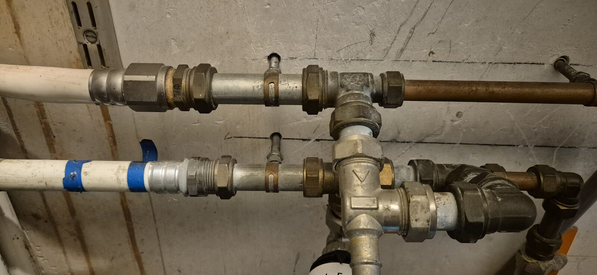
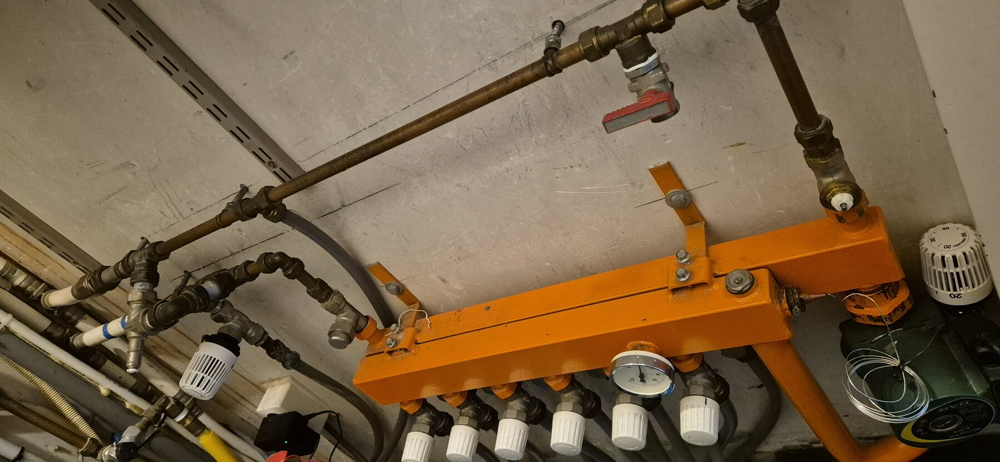
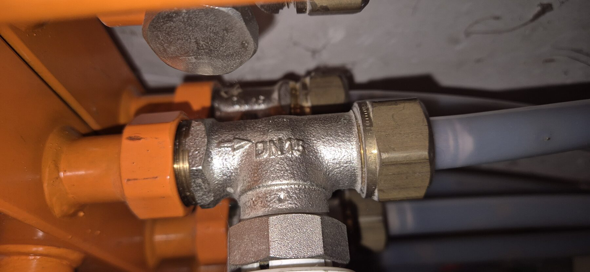
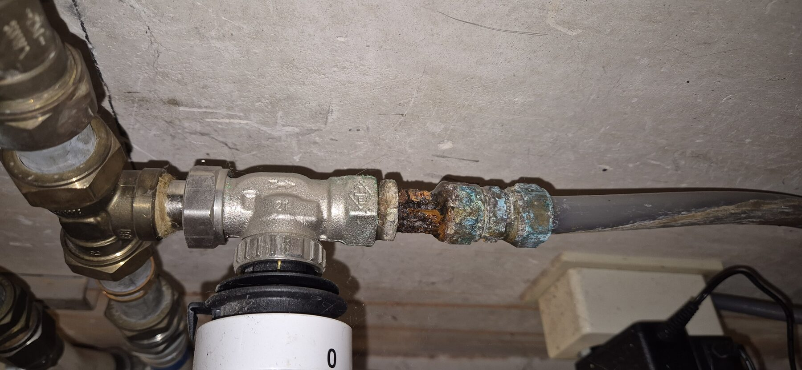

Vloerverwarming Specificaties
Vervangen van de bestaande gesloten (blinde) verdeler door een open verdeler met handmatig instelbare debietmeters. Systeem van 7 groepen, allemaal op dezelfde thermostaat - bewust geen stuurmotoren, voor een continue doorstroming die past bij de Quatt warmtepomp.
Bestaande verdeler


| Waarneming | Toelichting |
|---|---|
| Type verdelerbevestigd | Gesloten/blinde verdeler met 6 groepen: aanvoer en retour worden via messing knelkoppelingen direct doorverbonden, met alleen handbediende knoppen per groep (geen debietmeters). Er zit een manometer in het midden van de balk en een rode kogelkraan als hoofdafsluiter op de aanvoer. De nieuwe verdeler moet 7 groepen hebben - één meer dan de huidige 6. |
| 7e groepbevestigd | De ruimte voor de 7e groep is al aangelegd, maar de leiding hangt nu los achter de verdeler (niet aangesloten) - dat is niet correct. Bij de vervanging moet deze losse lus mee aangesloten worden op de nieuwe 7-groeps verdeler. Zie "7e groep - los aansluitpunt" hieronder. |
| Sensorkabel | Tussen de koppelingen hangt een dun zwart kabeltje met klemmetje, vermoedelijk een temperatuur- of vorstsensor voor de ketel/warmtepomp. Labelen bij demontage waar deze vandaan komt, zodat hij teruggeplaatst of vervangen kan worden. |
| Buismaatbevestigd | Bevestigd: de witte buis is de CV-aanvoer/-retour naar de verdeler, met een diameter van 2,5 cm (25 mm). Alles vanaf dit punt (de huidige gesloten verdeler) wordt vervangen door de nieuwe open verdeler. |
Aangesloten groepen (1-6) - buismaat

| Waarneming | Toelichting |
|---|---|
| Buismaat groepen 1-6bevestigd | T-stuk van een correct aangesloten groep gestempeld DN15 (~1/2") - komt overeen met 16 mm meerlagenbuis. |
7e groep - los aansluitpunt

| Waarneming | Toelichting |
|---|---|
| Corrosie op koppeling 7e groep | De knelkoppeling op de losse leiding van de 7e groep vertoont zichtbare corrosie/kalkaanslag. Deze verbinding moet vervangen worden, niet hergebruikt, wanneer de 7e groep wordt aangesloten op de nieuwe verdeler. |
Gecorrigeerd - geen gasafsluiter
| Waarneming | Toelichting |
|---|---|
| Oranje kleur | Op de eerste close-up leek een oranje ronde vorm op een gasafsluiter. Op de volledige foto blijkt dit de oranje gelakte verdelerbalk zelf te zijn, geen aparte kraan. De zichtbare kogelkraan op de hoofdleiding heeft een rode hendel (gebruikelijk voor een CV/water-afsluiter). Blijf bij twijfel over een eventuele gasleiding in de buurt altijd eerst navragen bij de aannemer voordat er iets wordt losgedraaid. |
Nieuwe verdeler
| Materiaal | Specifieke instructie |
|---|---|
| Henco RVS 7-groeps verdeler met debietmeters, 1" hoofdaansluitinggekozen | Huidige verdeler heeft 6 groepen, de nieuwe moet er 7 hebben. Gekozen voor Henco (zie boodschappenlijst): compleet geleverd met kogelkranen, ontluchters en aftapkraan, en goedkoopste optie. Puur handmatig instelbaar - bewust geen stuurmotoren: een stuurmotor zet een groep open/dicht en schakelt de warmtebron aan/uit op vraag, maar er is een Quatt warmtepomp aanwezig en in de winter is juist een continue, altijd doorstromende flow gewenst voor een comfortabel huis (past beter bij een warmtepomp dan aan/uit-cycli). Alle 7 groepen blijven dus continu open en draaien op dezelfde thermostaat. De debietmeters maken het mogelijk om het debiet per groep eenvoudig handmatig bij te stellen (verschillende leidinglengte/vloeroppervlak per ruimte). |
| Euroconus-naar-knel adapters, hoofdaansluiting (2x, 25 mm)bevestigd | Bevestigde buismaat van 2,5 cm (25 mm) voor de CV-aanvoer/-retour die op de verdeler aansluit. |
| Euroconus-naar-knel adapters, groepsleidingen (14x, 16 mm)bevestigd voor groepen 1-6 | Voor de 7 individuele vloerverwarmingslussen op de verdeler. Het T-stuk van een correct aangesloten groep is gestempeld DN15, wat overeenkomt met 16 mm meerlagenbuis. Voor de 7e groep nog te controleren of dezelfde maat geldt. |
| Nieuwe knelkoppeling, 7e groep (1x)bevestigd | De bestaande knelkoppeling op de losse leiding van de 7e groep vertoont corrosie/kalkaanslag en moet vervangen worden, niet hergebruikt. |
Overige overwegingen - niet nodigbevestigd
| Item | Toelichting |
|---|---|
| Mengklep/thermostaatkop (het 0-50 schijfje) | Zat op de huidige gesloten verdeler. Komt te vervallen bij de nieuwe open verdeler - de Quatt warmtepomp regelt de aanvoertemperatuur nu zelf. |
| Leidingisolatie om de verdeler | Niet nodig. |
| Verdelerkast | Niet nodig - de verdeler blijft open gemonteerd, zoals de huidige situatie. |
Kostenraming (indicatief, excl. btw en verzending)
| Onderdeel | Prijs |
|---|---|
| 7-groeps RVS-verdeler met debietmeters, incl. kogelkranen + ontluchters + aftapkraan | € 300 |
| Euroconus-knelkoppeling adapters, 14x groepsleidingen (maat n.t.b.) | € 70 |
| Euroconus-knelkoppeling adapters, 2x hoofdaansluiting 25 mm | n.t.b.nog opzoeken |
| Totaal, indicatief (excl. 25 mm adapters) | ≈ € 370 |
De 25 mm adapters voor de hoofdaansluiting zijn nog niet geprijsd - deze maat is minder standaard dan de 16-20 mm die voor losse groepen gebruikt wordt, dus vraag dit na bij dezelfde leverancier als de verdeler.
Boodschappenlijst - gevonden producten
| Product | Leverancier | Prijs |
|---|---|---|
| Henco RVS 7-groeps verdeler met debietmeters, 1" aansluiting, incl. kogelkranen/ontluchters/aftapkraanaanbevolen | Loodgietshop.nl | € 286,50 |
| Comap V9007C1 RVS-verdeler, 7 groepen, G1" hoofdaansluiting, G3/4" euroconus per groep | Comap / Van Marcke | n.o.t.k. |
| Zone-ready 7-groeps industrieverdeler met debietmeters, 1" aansluiting, 3/4"M euroconus per groep | Aircozonderstek.nl | € 405,00 |
| Euroconus-naar-knel adapter, 3/4" x buismaat (14x nodig) | Zelfde leverancier als verdeler | ≈ € 5 / stuk |
Stappenplan verdeler vervangen
| Stap | Toelichting |
|---|---|
| 1. Buismaat definitief opmeten | Schuifmaat op de kale PEX-buis (niet op de wartelmoer) om de exacte adaptermaat te bevestigen voordat er besteld wordt. |
| 2. Systeem drukloos en koud maken | Hoofdkraan van de CV/warmtepomp-installatie dicht, systeem laten afkoelen voordat er iets wordt losgedraaid. |
| 3. Water aftappen | Via de aftapkraan op de bestaande verdeler laten leeglopen in een emmer of via een tuinslang naar buiten. |
| 4. Sensorkabel loskoppelen en labelen | Het zwarte kabeltje tussen de leidingen markeren: waar het vandaan kwam en waar het straks weer op aan moet. |
| 5. Elke groep labelen vóór demontage | Elke aanvoer- en retourbuis nummeren met tape, zodat kringen later niet verwisseld worden. |
| 6. Oude gesloten verdeler demonteren | Knelkoppelingen losdraaien, verdelerframe van de muurbeugel afhalen. |
| 7. Nieuwe verdeler monteren | Muurbeugels op vergelijkbare hoogte bevestigen, verdeler waterpas ophangen. |
| 8. Hoofdaansluiting koppelen | Aanvoer en retour (25 mm, via 1" hoofdaansluiting) aansluiten op de bestaande CV-leiding. |
| 9. Alle 7 groepen aansluiten | Per label: euroconus-adapter erop, knelkoppeling vastdraaien op de PEX-buis, volgens de nummering uit stap 5. Inclusief de 7e groep die nu nog los achter de verdeler hangt. |
| 10. Sensorkabel terugplaatsen | Herbevestigen op de plek genoteerd in stap 4, of vervangen door een nieuwe sensor als het label losraakte. |
| 11. Vullen en per groep ontluchten | Langzaam vullen via de vulkraan, per groep: afsluiter dicht, ontluchten, weer open. Elke koppeling controleren op lekkage. |
| 12. Drukproef | Op bedrijfsdruk brengen (meestal 1,5-2 bar) en 30-60 minuten controleren op drukverlies. |
| 13. Debietmeters inregelen | Per groep instellen op het berekende debiet (l/min), op basis van vloeroppervlak en warmtevraag per ruimte. |
Checklist voor het gesprek met de aannemer
Belangrijkste aandachtspunten voor het vervangen van de verdeler.
Voorbereiding
- Bestel een verdeler met 7 groepen (huidige verdeler heeft er 6) - de 7e groep ligt al aangelegd maar hangt nog los achter de verdeler en moet mee aangesloten worden.
- Laat de buismaat van de losse groepsleidingen opmeten op de kale PEX-buis (niet de wartelmoer) voordat de adapters besteld worden. De CV-hoofdaansluiting is al bevestigd op 25 mm.
- Bevestig dat er bewust geen stuurmotoren komen - alle groepen blijven continu open en draaien op dezelfde thermostaat, voor een constante flow die past bij de Quatt warmtepomp.
Uitvoering
- Label elke groep (inclusief de nu nog losse 7e groep) en de sensorkabel vóór demontage, zodat na montage niets verwisseld wordt.
- Laat na montage elke groep individueel ontluchten en op debiet inregelen via de debietmeters.
- Laat na het vullen een drukproef van 30-60 minuten uitvoeren om lekkages uit te sluiten.